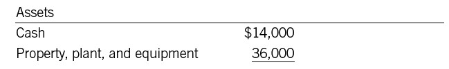
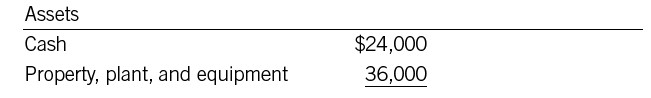
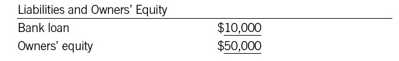

Why the Balance Sheet Balances
If you learned in school about the fundamental accounting equation, the instructor probably said something like this: “It’s called the balance sheet because it balances. Assets always equal liabilities plus owners’ equity.” But even if you dutifully wrote down that answer on the exam, you may be less than 100 percent crystal-clear on why the balance sheet balances. So here are three ways of understanding it.
REASONS FOR BALANCE
First, let’s go back to an individual. You can look at a company’s balance sheet just the same way you’d look at a person’s net worth. Net worth has to equal what he owns minus what he owes, because that’s the way we define the term. The first formulation of the “individual” equation in chapter 10 is owns – owes = net worth. It’s the same for a business. Owners’ equity is defined as assets minus liabilities.
Second, look at what the balance sheet shows. On one side are the assets, which is what the company owns. On the other side are the liabilities and equity, which show how the company obtained what it owns. Since you can’t get something for nothing, the “owns” side and the “how we obtained it” side will always be in balance. They have to be.
Third, consider what happens to the balance sheet over time. This approach should help you see why it always stays in balance.
Imagine a company that is just starting out. Its owner has invested $50,000 in the business, so he has $50,000 in cash on the assets side of the balance sheet. He has no liabilities yet, so he has $50,000 in owners’ equity. The balance sheet balances.
Now, the company buys a truck for $36,000 in cash. If nothing else changes—and if you constructed a balance sheet right after the truck transaction—the assets side of the balance sheet would look like this:

It still adds up to $50,000—and on the other side of the balance sheet, he still has $50,000 worth of owners’ equity. The balance sheet still balances.
Next, imagine that the owner decides he needs more cash. So he goes to the bank and borrows $10,000, raising his total cash to $24,000. Now the balance sheet looks like this:

Now it adds up to $60,000. He has increased his assets. But of course, he has increased his liabilities as well. So the other side of the balance sheet looks like this:

That, too, adds up to $60,000.
Note that owners’ equity remains unchanged throughout all these transactions. Owners’ equity is affected only when a company takes in funds from its owners, pays out money to its owners, or records a profit or loss.
In the meantime, every transaction that affects one side of the balance sheet affects the other as well. For example:
• A company uses $100,000 cash to pay off a loan. The cash line on the assets side decreases by $100,000, and the liabilities line on the other side decreases by the same amount. So the balance sheet stays in balance.
• A company buys a $100,000 machine, paying $50,000 down and owing the rest. Now the cash line is $50,000 less than it used to be—but the new machine shows up on the assets side at $100,000. So total assets increase by $50,000. Meanwhile, the $50,000 owed on the machine shows up on the liabilities side. Again, we’re still in balance.
As long as you remember the fundamental fact that transactions affect both sides of the balance sheet, you’ll be OK. That’s why the balance sheet balances. Understanding this point is a basic building block of financial intelligence. Remember, if assets don’t equal liabilities and equity, you do not have a balance sheet.